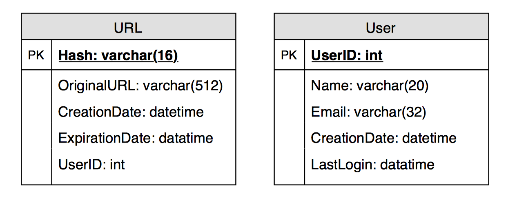

LC 535 - Encode and Decode TinyURL
Table of Contents
Encode and Decode TinyURL
Link: Encode and Decode TinyURL
Problem Description
TinyURL is a URL shortening service where you enter a URL such as https://leetcode.com/problems/design-tinyurl and it returns a short URL such as http://tinyurl.com/4e9iAk.
Design the encode and decode methods for the TinyURL service. There is no restriction on how your encode/decode algorithm should work. You just need to ensure that a URL can be encoded to a tiny URL and the tiny URL can be decoded to the original URL.
Method & Code
Basically, to solve this problem on LeetCode, simply use two hash map to store the URL. One store the mapping relationship from tiny URL to original URL. The other one stores the relationship from original URL to tiny URL.
The coding method of URL string is using system nano time and hash code function.
public class Codec {
private HashMap<String, String> tinyUrlMap = new HashMap<>();
private HashMap<String, String> longUrlMap = new HashMap<>();
/**
* Use hash code and system nano time as the key of tiny URL.
*
* @param longUrl long URL
* @return encoded tiny url
*/
public String encode(String longUrl) {
if (longUrlMap.containsKey(longUrl)) {
return longUrlMap.get(longUrl);
}
String prefix = "https://tinyurl.com/";
String tinyUrl = prefix + (longUrl.hashCode() + System.nanoTime()); // generate code and avoid collision
tinyUrlMap.put(tinyUrl, longUrl);
longUrlMap.put(longUrl, tinyUrl);
return tinyUrl;
}
/**
* Get the original URL based on encoded tiny URL.
*
* @param shortUrl tiny URL
* @return original URL
*/
public String decode(String shortUrl) {
return tinyUrlMap.get(shortUrl);
}
}
Follow Up
This could be a common system design problem. The basic system design flow is as following:
Service clarification
What is the purpose of system? What kind of function should be considered during the design?
- Generate shorten URL.
- Redirect shorten URL to the original URL.
- Customizable expiration time.
Calculation
Traffic estimates
Assuming there will be 500M new URL shortenings per month, with 100:1 read/write ratio, we can expect 50B redirections during the same period:
100 * 500M => 50B
Queries Per Second (QPS) for the service:
New URLs shortenings per second:
``500 million / (30 days * 24 hours * 3600 seconds) = ~200 URLs/s`
Considering 100:1 read/write ratio, URLs redirections per second will be:
100 * 200 URLs/s = 20K/s
Storage estimates
Assume the service store every URL shortening request (and associated shortened link) for 5 years. Since it is expected to have 500M new URLs every month, the total number of objects to store will be 30 billion:
500 million * 5 years * 12 months = 30 billion
Assuming each stored object will be approximately 500 bytes. 15TB of total storage are required:
30 billion * 500 bytes = 15 TB
Bandwidth estimates
For write requests, since 200 new URLs are expected in every second, total incoming data for the service will be 100KB per second:
200 * 500 bytes = 100 KB/s
For read requests, since every second the service expecting ~20K URLs redirections, total outgoing data for the service would be 10MB per second:
20K * 500 bytes = ~10 MB/s
Memory estimates
To build a cache for the service that caches the hottest URL, the memory size should be considered. Follow the 80-20 rule, 20% of URLs generate 80% of traffic. The top 20% URL can be cached.
Since the service will have 20K requests per second, we will be getting 1.7 billion requests per day:
20K * 3600 seconds * 24 hours = ~1.7 billion
To cache 20% of these requests, the total memory size should be 170GB.
0.2 * 1.7 billion * 500 bytes = ~170GB
One thing to note here is that since there will be a lot of duplicate requests (of the same URL), therefore, the actual memory usage will be less than 170GB.
System APIs
Create
createURL(api_dev_key, original_url, custom_alias=None, user _name=None, expire_date=None)
Parameters:
api_dev_key (string): The API developer key of a registered account. This will be used to, among other things, throttle users based on their allocated quota.
original_url (string): Original URL to be shortened.
custom_alias (string): Optional custom key for the URL.
user_name (string): Optional user name to be used in the encoding. expire_date (string): Optional expiration date for the shortened URL.
Returns: (string)
A successful insertion returns the shortened URL; otherwise, it returns an error code.
Delete
deleteURL(api_dev_key, url_key)
Where “url_key” is a string representing the shortened URL to be retrieved. A successful deletion returns ‘URL Removed’.
Database Design
A few observations about the nature of the data storage:
- billions of records will be stored.
- Each object stored is small (less than 1K).
- There are no relationships between records—other than storing which user created a URL.
- The service is read-heavy.
Database Schema:

Since it is anticipated of storing billions of rows, and the objects have no relationship, a NoSQL key-value store like DynamoDB or MongoDB can be applied.
Basic System Design and Algorithm
Encoding actual URL
Function: MD5 or SHA256
Issue:
- If multiple users enter the same URL, they can get the same shortened URL, which is not acceptable.
- What if parts of the URL are URL-encoded?
Workaround:
Append an increasing sequence number to each input URL to make it unique, and then generate a hash of it.
Problem for the workaround:
- Overflow.
- Appending an increasing sequence number will also impact the performance of the service.
Generating keys offline
Use a standalone Key Generation Service (KGS) to generate key for user. Whenever the service want to shorten a URL, it will just take one of the already-generated keys and use it. KGS will make sure all the keys inserted into key-DB are unique.
Concurrency problem:
Servers can use KGS to read/mark keys in the database. KGS can use two tables to store keys: one for keys that are not used yet, and one for all the used keys. As soon as KGS gives keys to one of the servers, it can move them to the used keys table. KGS can always keep some keys in memory so that it can quickly provide them whenever a server needs them.
KGS also has to make sure not to give the same key to multiple servers. For that, it must synchronize (or get a lock on) the data structure holding the keys before removing keys from it and giving them to a server.
Database size:
6 (characters per key) * 68.7B (unique keys) = 412 GB
Single failure of KGS:
Having a standby replica of KGS. Whenever the primary server dies, the standby server can take over to generate and provide keys.
Data Partitioning and Replication
- Range Based Partitioning: unbalanced DB server.
- Hash-Based Partitioning: still lead to overhead problem. Solution: consistent hashing.
Cache & Load Balancer
Cache evict policy: LRU.
Add a Load balancing layer at three places in system:
-
Between Clients and Application servers
-
Between Application Servers and database servers
-
Between Application Servers and Cache servers
The service could use a simple Round Robin approach that distributes incoming requests equally among backend servers. This LB is simple to implement and does not introduce any overhead. Another benefit of this approach is that if a server is dead, LB will take it out of the rotation and will stop sending any traffic to it.
A problem with Round Robin LB is that we don’t take the server load into consideration. If a server is overloaded or slow, the LB will not stop sending new requests to that server. To handle this, a more intelligent LB solution can be placed that periodically queries the backend server about its load and adjusts traffic based on that.
Optimization
Purging or DB cleanup
- Whenever a user tries to access an expired link, the service can delete the link and return an error to the user.
- A separate Cleanup service can run periodically to remove expired links from our storage and cache. This service should be very lightweight and can be scheduled to run only when the user traffic is expected to be low.
- The service can have a default expiration time for each link (e.g., two years).
- After removing an expired link, the service can put the key back in the key-DB to be reused.
- Should the system remove links that haven’t been visited in some length of time, such as six months? This could be tricky. Since storage is getting cheap, the links can be kept forever.
Statistics
- Country of the visitor.
- Date and time of access.
- Web page that refers the click.
- Browser, or platform from where the page was accessed.
Security and Permissions
Can users create private URLs or allow a particular set of users to access a URL?
The service can store the permission level (public/private) with each URL in the database. It can also create a separate table to store UserIDs that have permission to see a specific URL. If a user does not have permission and tries to access a URL, the service can send an error (HTTP 401) back. Given that the service storing our data in a NoSQL wide-column database like Cassandra, the key for the table storing permissions would be the ‘Hash’ (or the KGS generated ‘key’). The columns will store the UserIDs of those users that have the permission to see the URL.